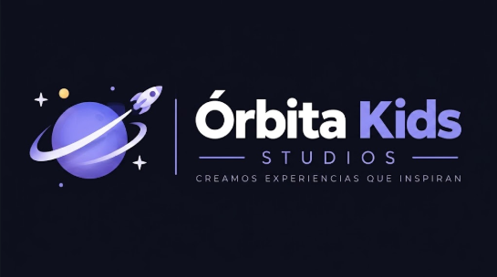
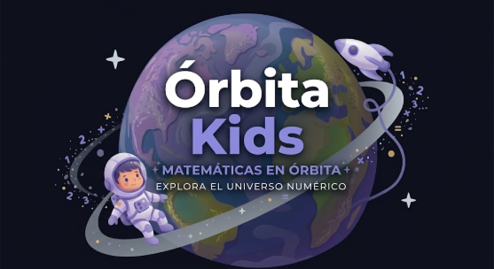

APP MÓVIL
WIREFRAME · SOLO CAJAS Y MEDIDAS ÓRBITA KIDS / SKETCHES
ESTUDIANTE · APP MÓVIL
WIREFRAME · BLANCO Y NEGRO01 / 20
RECORRIDO DE PANTALLAS01 de 20


Wireframes en blanco y negro con medidas: dp para la app móvil (Flutter) y px para la web/PWA (React + Vite). Explora cada pantalla, prueba sus acciones y revisa los recorridos en el diagrama.